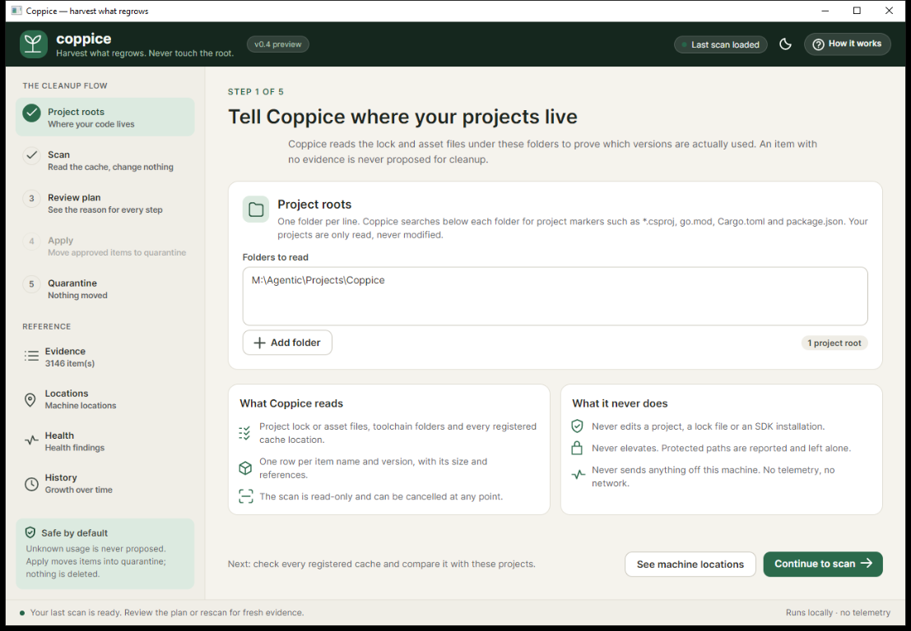
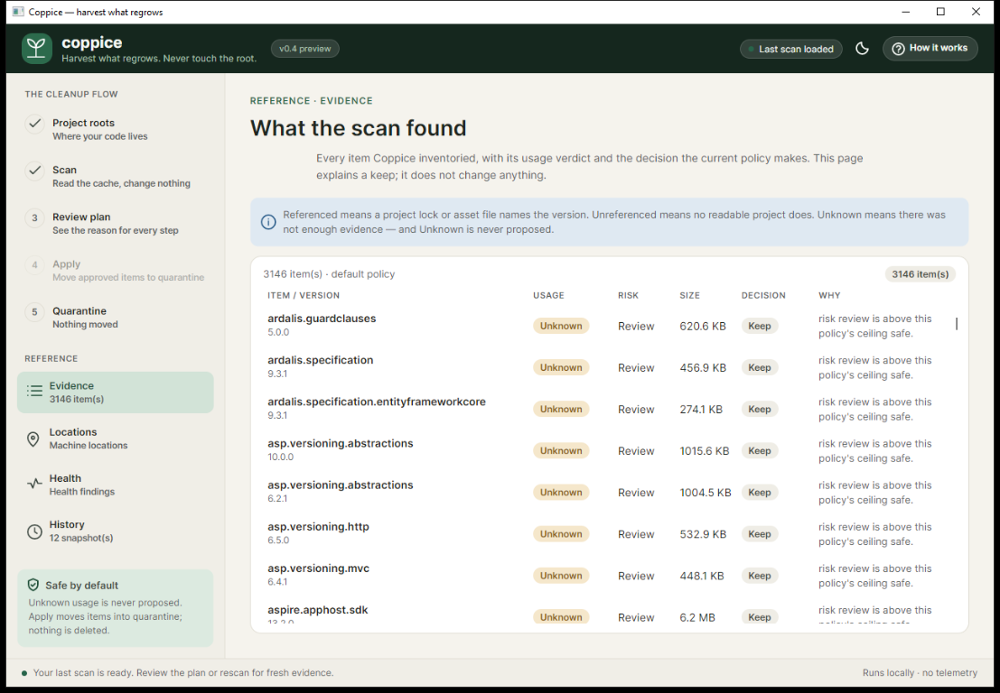
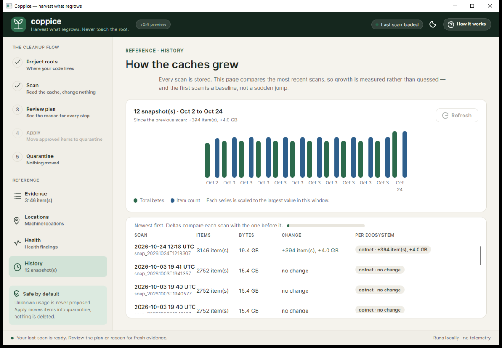

Quarantine, not deletion.
Path steps are renamed to .coppice/quarantine/… on the same volume. Restore re-checks the content hash, containment and occupancy. Only quarantine prune deletes, after a 30-day default floor and a typed yes.
A native, plugin-based toolchain & cache cleaner for polyglot developers
Coppice proves what is actually in use, proposes a plan with a reason for every step, and moves approved items into a same-volume quarantine you can restore. No daemon. No network. No telemetry.
v0.4.0-rc.2 candidate no tagThe problem
A polyglot machine collects SDK versions, package caches, build caches and global tools. Removing them is fragmented, and blind cleaners turn disk pressure into a trust problem.
Coppice starts from evidence. It resolves the registered cache locations, reads the project manifests that prove use, and refuses to propose anything it cannot prove. Unknown is never unused.
Named by a readable project. Never proposed.
No project named it. Eligible for a plan.
No proof either way. Never proposed.
The name
/ˈkɒp.ɪs/ KOP-is
The tool does the same to caches: it cuts back what has grown beyond use, keeps the root, and leaves a way for everything to return.
One cut, five proofs
Follow one cache item through the rc.2 end-to-end run. The artifacts below are real output, trimmed and with paths shortened.
Read-only. It resolves the .NET, Go, Rust and Node locations, reports what validated, and refuses the rest. A denied or ambiguous path is a report, not a failure.
nuget-packages Ok cleanable
dotnet-root Denied denylist
go-bin FailsFingerprint report-only
npm-global None unresolvedIt reads project evidence and classifies every cached version. Without a project root, everything stays Unknown and nothing is proposed. That is the safety rule, not a bug.
Referenced 1 · Unreferenced 8 · Unknown 0 · Total 9
real machine: 3,152 packages / 19.4 GB
15.6–17.7 s warm · single owner machine, T-058Every step carries a reason. The plan is checksummed, bound to a snapshot, and touches no cache. Nothing is proposed because it looks old.
plan pln_20c055636739 · 1 step · 18 B
Safe PathDelete newtonsoft.json 1.0.0
reason no project references it; beyond the 1 newest kept;
default policy, safe tier.Path steps are renamed into a same-volume quarantine. A lock, a changed path or a failed check is a recorded refusal. apply never deletes.
status Completed · ok 1 · failed 0 · reclaimed 18 B
Moved to quarantine. Restore with
coppice quarantine restoreRestore re-checks the content hash, containment and occupancy before moving anything back. The audit ledger is hash-chained and replayable.
restore f0c8bc0424ae4cbe · byte-identical
audit verify — 2 record(s) over 2 line(s)
verified: the chain is intact and the log agrees
with the quarantine index.Trimmed from the rc.2 clean-environment E2E run (`evidence/v0.4.0-rc.2/e2e-scrubbed-path.md`); paths shortened. Supporting machine evidence, not the fresh-VM human gate.
Safety model
One rule decides every step: a cache is only safe to remove when the evidence says it is not in use, and the user has seen why. The rings below are the boundaries that make that rule true rather than promised.
Hover or focus a ring to see its rule.
--strict, path, size and mtime must still match.A failure at any step is a recorded refusal, not a partial deletion. Every move appends one hash-chained audit line.
Path steps are renamed to .coppice/quarantine/… on the same volume. Restore re-checks the content hash, containment and occupancy. Only quarantine prune deletes, after a 30-day default floor and a typed yes.
Every mutation appends one hash-chained JSONL line. audit verify replays it against the index and the filesystem. Apply is write-ahead journaled; --resume reconciles an interrupted run.
doctor, roots, scan and plan do not modify a scanned cache. The plan is checksummed, bound to a snapshot, and touches nothing. apply asks first.
“apply never deletes.”
docs/safety.md
“Unknown ≠ unused.”
README.md
Three surfaces, one engine
The CLI, the seven-screen TUI and the Avalonia shell share the same scan, plan, gateway, journal and audit services. The desktop shell ships as a separate self-contained artifact.



Captured from the rc.1 GUI; the GUI is unchanged in rc.2.
doctor · scan --projects · plan · apply · quarantine list|restore|prune · audit show|verify · history · completions · tui
Exit codes: 0 success · 1 runtime · 2 usage · 3 safety abort · 4 partial or cancelled apply.
Seven screens: Dashboard, Roots, Items, Problems, Plan review, Apply progress, Quarantine.
space toggles · a second a applies · esc cancels between steps.
TUI contractCoverage
The .NET code profile and the Go, Rust and Node manifests resolve through the same engine, fingerprint gate and provenance reporting. A fifth ecosystem is one registry entry.
NuGet packages, SDK tools and workloads. The built-in code profile.
Module cache, build cache and go/bin.
Cargo registry and git checkouts, plus rustup toolchains.
npm cache and global packages.
Installer-owned locations — MSI SDKs, the Visual Studio installer cache, NuGet’s http-cache and temp — are report-only. Python, pnpm, yarn, bun and Docker are not scanned in 0.4.0-rc.2; they are v1.0 planning. --projects is never auto-discovered; without it, every cache stays Unknown.
Measured, not promised
These are single-machine measurements and recorded fixtures, not a benchmark promise. Each number links to the evidence that produced it.
packages / 19.4 GB
Scanned in 15.6–17.7 s warm after the T-058 reference-index fix. 190.6 s before; 210.5 s cold.
AGENDA · T-058items / 31,457,280,000 B
Real filesystem, 1 MB sparse files, scanned in 9.965 s. NFR-04 met.
AGENDA · NFR-04ms median cold start
Framework-dependent binary, rc.2 T-074 rebuild. Observed range 82–218 ms.
evidence · cold startMB single file
Framework-dependent CLI. Self-contained 38.53 MB; GUI 50.04 MB. No trimming.
release notes · sizesThe 3,152-package run is one owner machine after T-058; the 30,000-item run is a real-filesystem sparse fixture. CI is a six-cell matrix, not a performance benchmark.
Release status
Coppice is at 0.4.0-rc.2. The machine evidence is green. Four human gates are open. So there is no v0.4.0 tag, no GitHub Release and no public package feed — by design.
A green build is not evidence for a feature, and a machine cannot sign a human gate. This page shows the candidate and the open gates rather than skipping them.
machine gates
human gates
0.3.0 was withdrawn before it was ever tagged; the record is in ADR-017. The rc.2 E2E is supporting machine evidence, not the fresh-VM gate.
Get started
All paths end with a coppice command on your PATH. No Docker, daemon, service or helper process is involved.
Needs the .NET 10 runtime. Produces a single file.
$ bash scripts/publish.sh win-x64Needs no .NET runtime on the target machine.
$ SELF_CONTAINED=1 bash scripts/publish.sh win-x64Pack from a checkout, then install the candidate.
$ dotnet pack \
src/Coppice.Cli/Coppice.Cli.csproj \
-c Release -o artifacts/packages
$ dotnet tool install --global \
--add-source ./artifacts/packages \
coppice --version 0.4.0-rc.2No public package feed carries Coppice yet. A tag builds all six RIDs through release.yml with SHA256SUMS.txt and SIZES.txt; until then, build from a checkout. See the quickstart for every path.
FAQ
Nothing here is a promise about a tagged release. The repository is the source of truth.
apply delete anything?No. Path steps are renamed into a same-volume quarantine. Permanent removal is the separately confirmed quarantine prune, which defaults to a 30-day floor and requires a typed yes or --yes.
Unknown mean?Coppice could not prove usage either way. Unknown items are never proposed, because absence of evidence is not evidence of absence.
It reads project manifests and lock or asset files to resolve references. It never edits a project, a lock file or an SDK installation.
No network calls and no telemetry. ADR-009 is authoritative. CI runs the suite under unshare --net with an egress canary that fails if the network is available.
No. Installer-owned locations are report-only. Coppice never asks for elevation and never runs a command as root or Administrator.
Yes, while the item is in quarantine. Restore re-checks the content hash, containment and occupancy before moving it back. After quarantine prune, the content is gone.
node_modules, bin or obj?No. Coppice is a machine-level toolchain and cache cleaner, not a project-artifact cleaner. kondo-style project cleanup is v1.0 planning (T-069).
No. 0.4.0-rc.2 is a release candidate. There is no tag, no GitHub Release and no public package feed; four human gates are open. The status section names them.